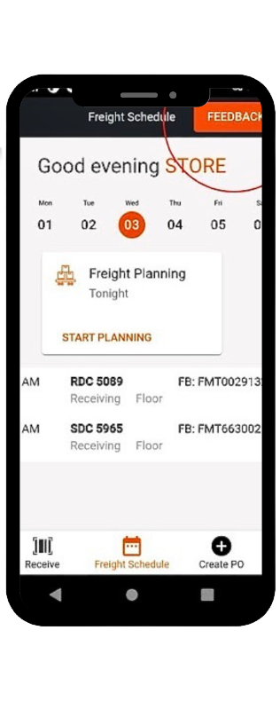
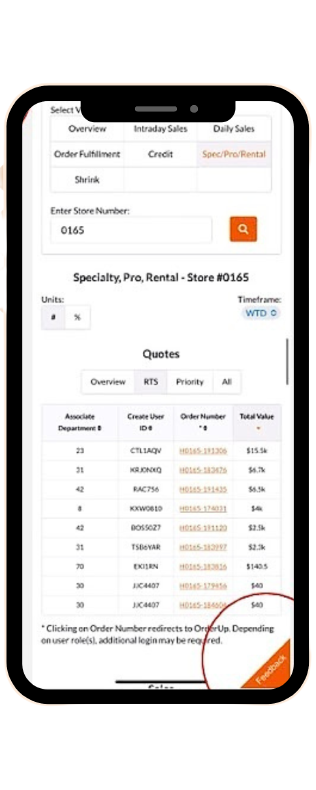
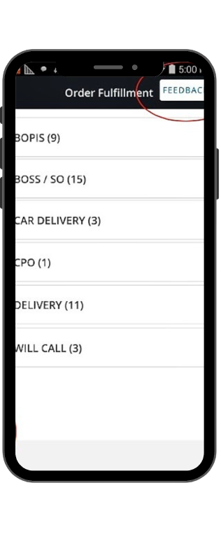
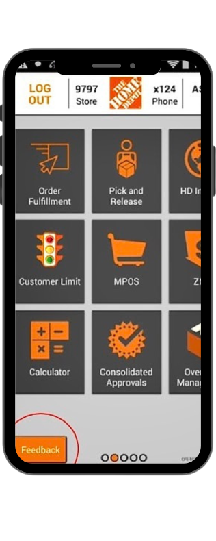
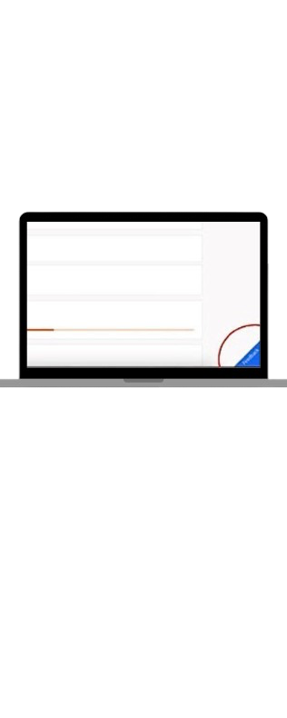
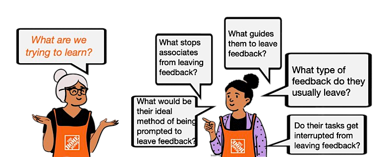
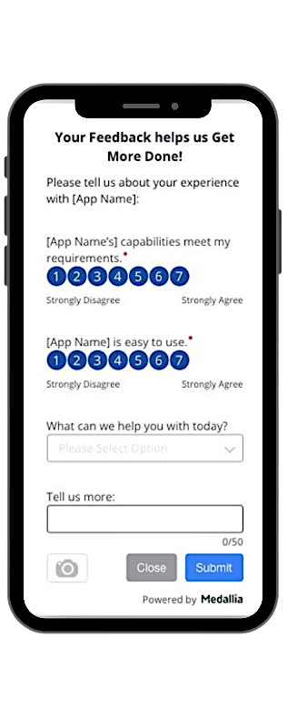
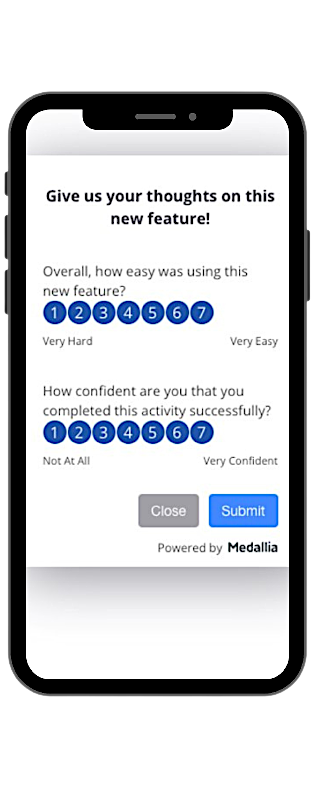

Team
Store Tasking
Overview
Redesigning the way our associates can leave feedback
Role
UX Design Intern
Timespan
Aug-Dec 2022
Tools
Figma
Miro
Microsoft Forms
Yammer
Background
We noticed that our ways of getting feedback from store associates were not unified or easily accessible on the applications they use on the Home Depot phones. In the different applications, the feedback buttons had different locations on screen, different look and feel, or were entirely nonexistent.
    This makes it difficult for associates to leave feedback and therefore, makes it more difficult to tackle the issues they are facing.
Problem
Soon into understanding this issue, my mentor and I found that another designer was working on improving the button look and placement so we decided to focus our research on the associate feedback as a whole. I had seen complaints on the way we collect feedback from the internal social media website Yammer. So, I wanted to understand what exactly the issues were and how the associates would prefer to leave feedback.
Project Goals
Finding what look and feel of feedback do the associates find more usable and understanding how the associates view the feedback experience as a whole.
Problem Statement
How can we make our feedback experience more intuitive, easy, and usable so our associates can provide feedback at their convenience and quickly?
Research Approach
I started by forming a script of questions to find all the answers I was looking for and creating a Microsoft Forms survey containing these questions. While some were basic yes or no questions, others allowed for long answers from our associates. I posted the link to the survey on the Yammer associate channels and within 2 weeks I got over 65 really informative results.

Research Understandings
When asked “If you left feedback, did you believe it would be viewed and addressed?”, over 55% of respondents said no. 33% of respondents said they have wanted to leave feedback but were unable to and when asked what prevented them from leaving feedback, 39% said there was no feedback option and 17% said they were no helpful feedback options. Associates also expressed dislike with the feedback page making associates login to submit feedback which disrupts the task they are currently doing on the app as they lose their progress. 51% of respondents said they were not able to easily resume their task after providing feedback.
Creating Solutions
Store Tasking applications account for approximately 90% of the applications on HD phones, so if we unified how we collect feedback across the portfolio of apps in store tasking, we could gather more consistent data about the health of our portfolio. I began by making sure each app had an option to submit feedback and that the feedback sheet was now just a pop-up that would not disrupt any app tasks. I changed the questions to better reflect what the associates were submitting feedback about (e.g. "Bug Report", "Feature Request", "Compliment”, "Suggestion") and gave them the option to freely submit feedback in a text box. I added UM/UX lite questions in the feedback survey to gather contextual feedback on the app’s performance so that we could analyse this number over time and in accordance to new features being released. I decided to also add a feature where after submitting feedback, the associate receives an email stating the feedback was acknowledged and is valuable and a rough time estimate on how long their issue would be fixed by to give them more confidence that their feedback is helpful.
Prototyping and Testing
I created a prototype of how the feedback survey would now look like. The number of feedback responses since its release has gone up by 43%.
 Takeaways
1. Implement the feature that keeps associates informed on how the progress on their feedback is going.